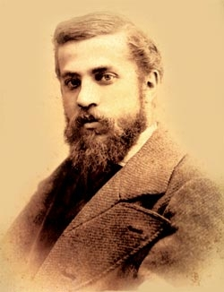
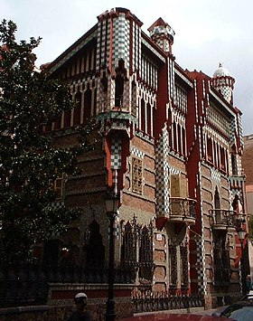
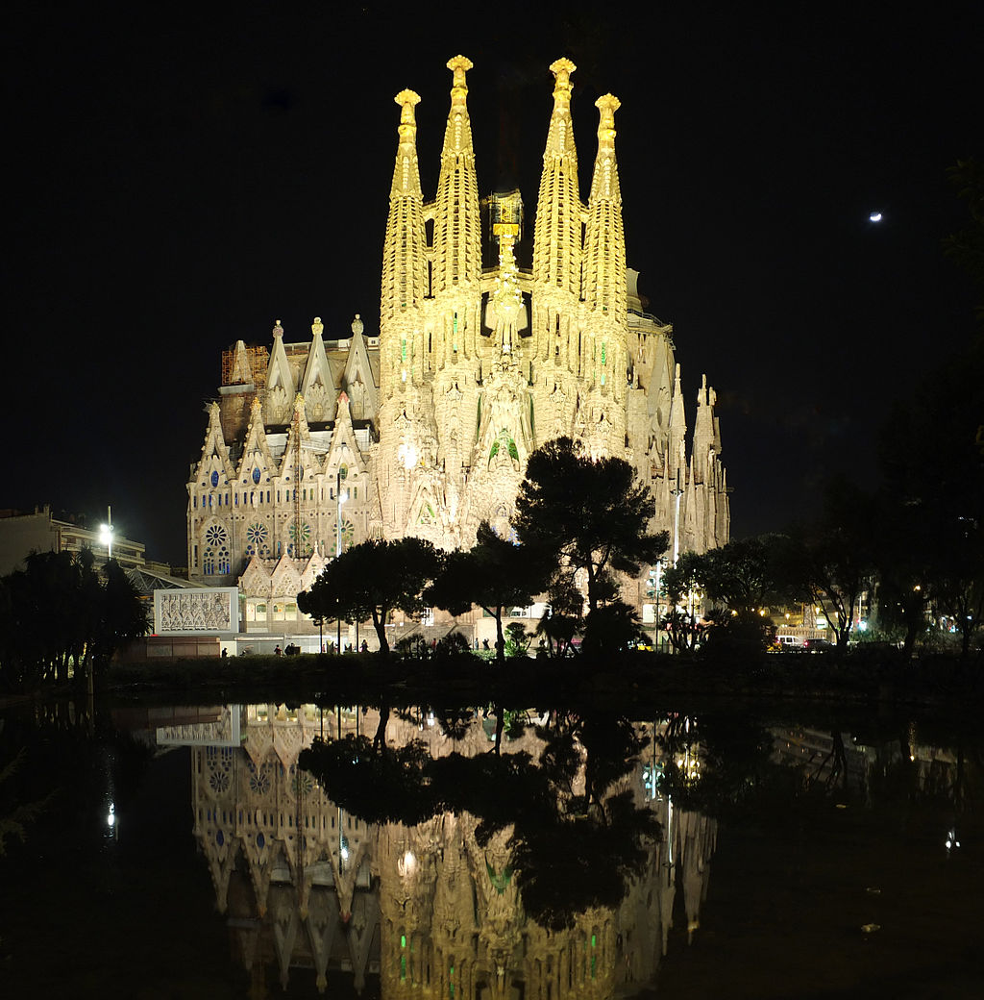
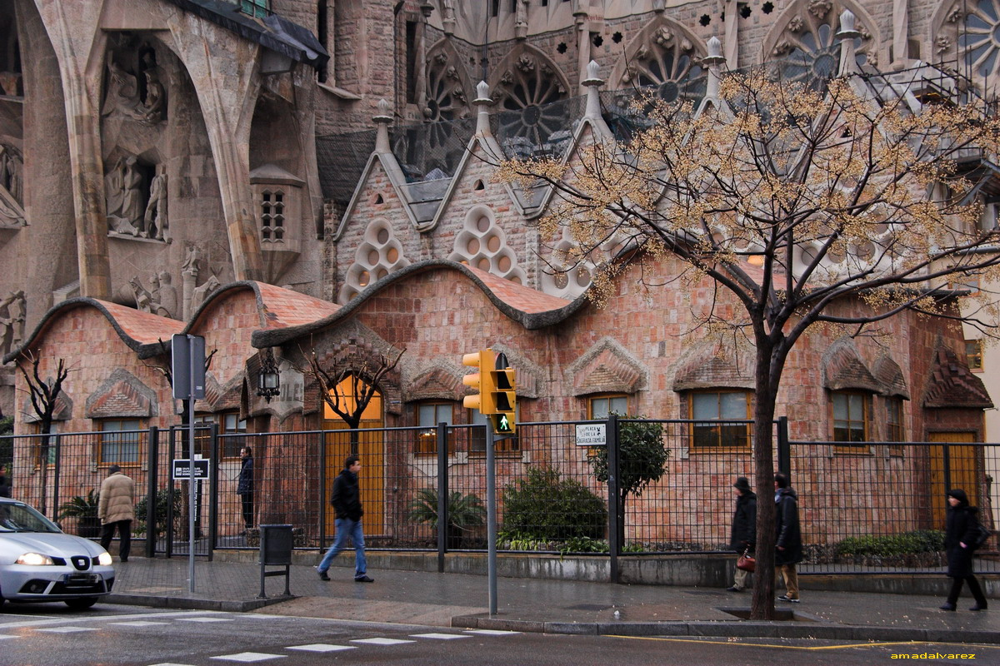
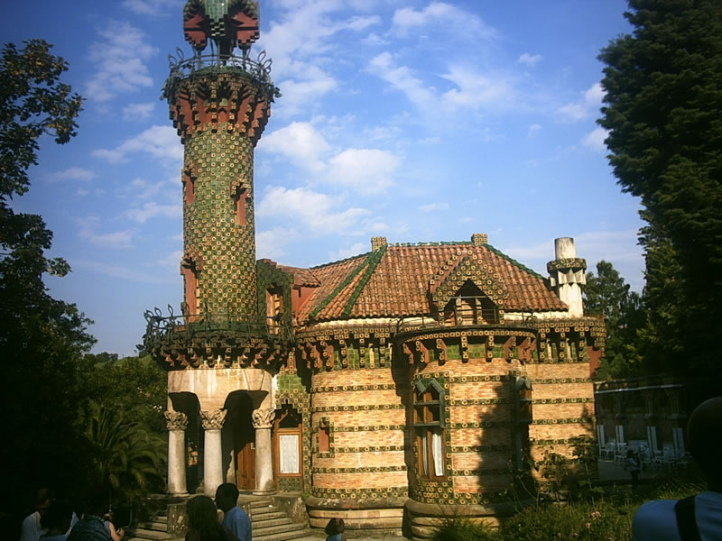
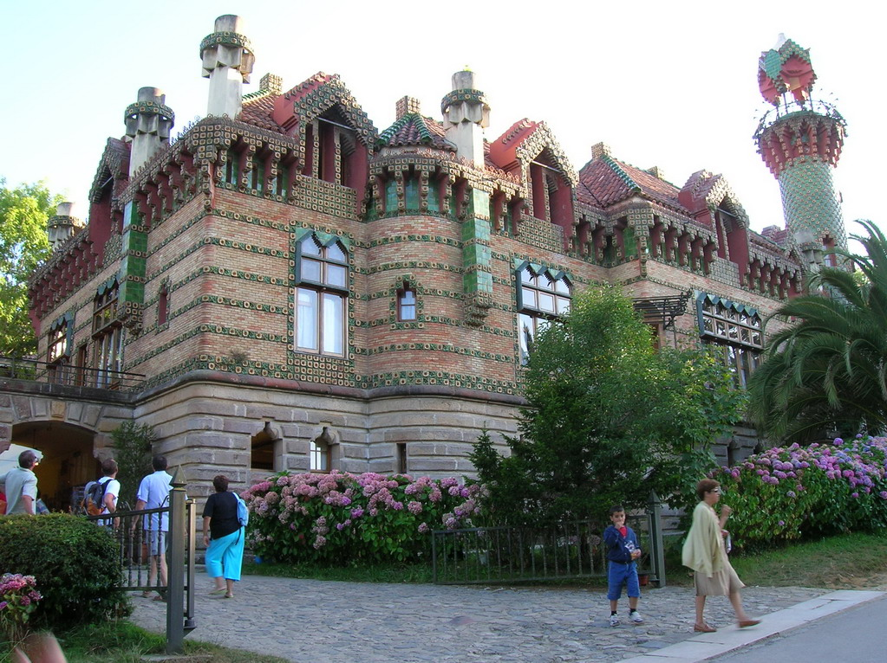

Анто́ни Пла́сид Гильéм Гауди́-и-Корне́ — каталонский архитектор, большинство проектов которого возведено в Барселоне.
Семья ВотАнтони Гауди-и-Корнет родился 25 июня 1852 года в небольшом городке Реус, недалеко от Таррагоны, в Каталонии. По другим сведениям, местом рождения являлся Риудомс — местечко, расположенное в 4 км от Реуса, где у его родителей был небольшой загородный дом. Он был пятым, младшим, ребёнком в семье котельных дел мастера Франсеска Гауди-и-Серра и его жены Антонии Курнет-и-Бертран. Именно в мастерской отца, по признанию самого архитектора, в нём пробудилось ощущение пространства. Два брата Гауди умерли во младенчестве, третий брат скончался в 1876 году, а вскоре после этого умерла и мать. В 1879 году умерла и его сестра, оставив на попечение Гауди маленькую дочь. Вместе с отцом и племянницей Гауди поселился в Барселоне, где в 1906 году скончался его отец, а спустя шесть лет — и слабая здоровьем племянница. Гауди никогда не был женат. Он с детства страдал ревматизмом, препятствующим играм с другими детьми, но не мешающим длительным одиночным прогулкам, к которым он питал пристрастие всю свою жизнь. Ограниченная из-за болезни подвижность обострила наблюдательность будущего архитектора, открыла ему мир природы, ставший главным источником вдохновения при решении как художественно-оформительских, так и конструктивных задач.
Каса-Мила́[2] (кат. Casa Milà [ка́са мила́]) — жилой дом, построенный в 1906-1910 годах в Барселоне архитектором Антони Гауди для семьи Мила, одна из достопримечательностей каталонской столицы. Здание расположено на пересечении бульвара Пассеч-де-Грасиа с улицей Карре-де-Провенса (кат. Carrer de Provença). Каса Мила стал последней светской работой Гауди, прежде чем он полностью посвятил себя работе над храмом Саграда Фамилиа.

Дом Висенс (кат. Casa Vicens) — частный жилой дом, построенный в 1883—1885 годах в Барселоне архитектором Антони Гауди для семьи Мануэля Висенса, одна из достопримечательностей каталонской столицы. Здание расположено по адресу: улица Каролинас (кат. Carrer de les Carolines), 22-24, в районе Барселоны Грасия и является первым крупным заказом Гауди. Проект дома был выполнен А. Гауди в 1878 году, то есть практически одновременно с получением диплома архитектора. Дом, предназначенный под летнюю резиденцию, был заказан М. Висенсом, фабрикантом кирпича и керамической плитки. Он был построен из необработанного камня и цветных керамических плиток, расположенных в шахматном порядке с растительными орнаментами. Керамическая плитка является данью деятельности его владельца. В плане дом представляет собой практически правильный четырёхугольник, форму которого нарушает лишь столовая и курительный салон. При строительстве дома Гауди использовал большое число различных декоративных элементов, таких как башенки, эркеры, балконы, выступы фасадов. Это позволило ему, несмотря на простоту формы здания, добиться удивительного богатого объёмного решения. Основным строительным материалом является необработанный камень, который молодой архитектор использует в сочетании с производимыми заказчиком кирпичом и полихромными изразцами, образующими шахматный или цветочный узор. И конструктивное, и декоративное решение здания выполнены под влиянием испано-арабского стиля мудехар, особенно заметного в верхней части здания, однако в оформлении здания явственно ощущается свойственное более позднему Гауди стремление к поиску новых форм и декоративных элементов. Эта работа Гауди, по сути, является одной из первых архитектурных работ в стиле модернизма, который резко контрастировал с преобладавшим в то время эклектизмом. Уже в этой ранней работе выявляется стремление Гауди к созданию архитектурного ансамбля, в котором важна каждая деталь. Поэтому он сам спроектировал оригинальные решётки ворот, окон и балконов и выполнил эскизы интерьеров столовой и курительной комнаты. До 1925 года, когда домовладельцы провели реконструкцию дома и было выполнено расширение улицы Каролинас, дом был окружён садом. В ходе этой реформы, а также после продажи в 1946 и 1962 годах части земельного участка большая часть сада прекратила своё существование, а вместе с ней были утрачены часть ограды, ротонда и фонтан с каскадом. С 2005 года дом Висенс вместе с другими творениями Антони Гауди включён в Список Всемирного наследия ЮНЕСКО. Поскольку дом является частным владением, его посещение для осмотра внутреннего убранства невозможно. Однако один день в году, 22 мая, в день Св. Риты, дом открыт для «соседей и городских жителей».
Храм Святого Семейства. Полное название: Искупительный храм Святого Семейства (кат. Temple Expiatori de la Sagrada Família, иногда по-русски неточно называется собором Святого Семейства) — церковь в Барселоне, в районе Эшампле, строящаяся на частные пожертвования начиная с 1882 г., знаменитый проект Антонио Гауди. Один из самых известных "долгостроев" мира: по решению инициаторов строительства храма финансирование работ должно выполняться исключительно за счёт пожертвований прихожан. Также окончание строительства задерживает сложность изготовления каменных блоков. Согласно компьютерной модели, каждый из них требует индивидуальной обработки и подгонки. Необычный внешний вид храма сделал его одной из главных достопримечательностей Барселоны. По сведениям газеты El Periódico de Catalunya, в 2006 г. строительство посетило 2,26 миллиона человек, что ставит объект в один ряд по популярности с музеем Прадо и дворцом Альгамбра.
|  |  |
|
|
Эль-Каприччо (кат. Capricho de Gaudí) — летний особняк на кантабрийском побережье в местечке Комильяс близ города Сантандера, построенный в 1883—1885 годах по проекту известного каталонского архитектора Антонио Гауди, заказ к которому поступил от Максимо Диаса де Кихано, родственника Эусебио Гуэля, получившего от испанского короля титул маркиза де Комильяс. Здание построено для наследника маркиза. Строительство проходило под руководством архитектора Кристофола Касканте-и-Колома. Сам Гауди ни разу не посетил строительную площадку[1]. В конструктивном плане в проекте использовано горизонтальное распределение пространства, жилые помещения выведены окнами в долину, нисходящую к морю. В цокольном этаже размещены кухня и хозяйственные службы, на первом этаже располагаются просторные залы, курильная, жилые помещения и несколько гостевых спален с отдельными ванными комнатами. Через галерею из любой спальни можно попасть в сердце здания — салон-гостиную с двухуровневым потолком[1]. Снаружи здание облицовано рядами кирпича и керамической плитки. Главный фасад подчеркнуто выделен в цоколе окрашенной в охряные и серые цвета рустикой с грубым рельефом. Первый этаж облицован широкими рядами разноцветных кирпичей чередующимися с узкими полосами майоликовых плиток с рельефными слепками соцветий подсолнуха.
Фасад особняка
Каса-Батльо́ (кат. Casa Batlló; иногда транслитерируется в русский как «Батло» или «Бальо», также известен как «Дом Костей») — жилой дом, построенный в 1877 году для текстильного магната Жозепа Бальо-и-Касановаса по адресу: Пассеч-де-Грасиа (Passeig de Gràcia), 43 в районе Эшампле (кат. Eixample), Барселона и перестроенный архитектором Антони Гауди в 1904—1906 годах.